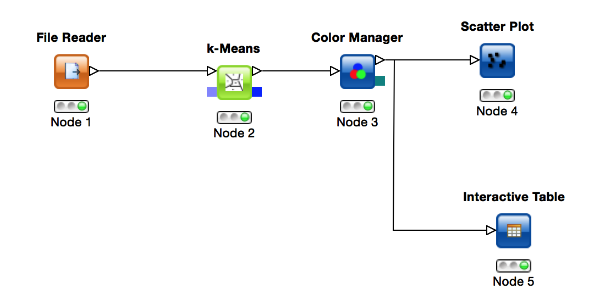

KNIME
A demo of buiding a KNIME workflow
Yi Hsiao
2015/09/15
Introduction
- You can review today's demo materials through this presentation and document here
- I will show you how to build a workflow related to k-means clustering in KNIME
Iris Dataset
- A multivariate data set introduced by Ronald Fisher in 1936
- The dataset consists of 50 samples from each of three species of Iris flowers (Iris setosa, Iris virginica and Iris versicolor)
- Four attributes were measured from each sample. These attributes are the length and the width of sepal and petal, in centimeters.
- There are no missing values
- Based on the combination of the four features most Machine Learning methods can learn to distinguish among the irises
K-means Clustering
- Clustering
- Use an iterative refinement technique
- Given an initial set of k means, the algorithm proceeds by alternating between two steps:
- Assignment step
- Update step
Let's Demo!
- The finished workflow would look like this

Thank you for your listening

Appendix
- The finished workflow would look like this